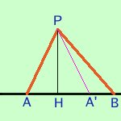

|
Fornisco qui un breve cenno di dinostrazione, ma tu, per esercizio, potresti farne la dimostrazione completa con ipotesi, tesi.... ed anche del teorema inverso  ribaltando attorno ad AH il triangolo PAH ottieni il triangolo PA'H e nel triangolo che si forma A'BP l'angolo in A' e' ottuso |